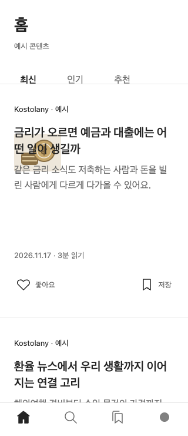
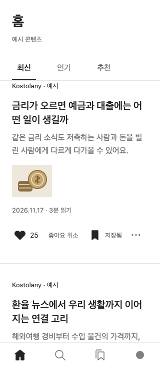
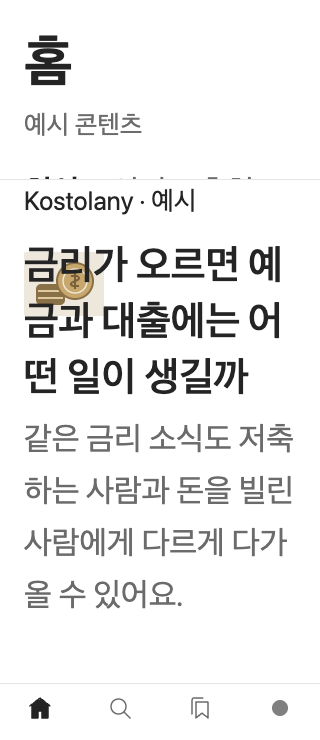
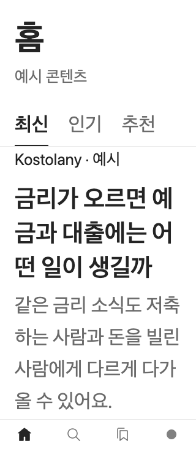

Goal 13 · Medium 원본과 실제 8081 캡처
2026-11-19. 원본 PNG 1179×2556을 CSS 폭 390 이하로 표시하며 원본 파일은 바꾸지 않았다. 구현은 Chrome 웹 미리보기 390×844(별도 작은 폭 320×740). 실제 iOS/Android·상태바·Safe Area·키보드 검증이 아니다. 원본 동작은 정적 캡처 관찰 범위이며 픽셀 일치나 실제 계정 재현 완료를 뜻하지 않는다.
홈
제목·요약·출처·오른쪽 이미지·구분선·하단 4탭을 참고. 최신/인기/추천과 하트 좋아요는 자체 기능. For you의 원형 −를 북마크로 해석하지 않음.
Medium 원본 · 분석 문서 실제 구현 · Chrome localhost:8081
실제 구현 · Chrome localhost:8081
검색
검색창·뒤로·지우기·결과 유형 밑줄·기사 카드 참고. 기사만 검색하며 빈 결과/실패 재시도는 자체 설계.
Medium 원본 · 분석 문서 실제 구현 · Chrome localhost:8081
실제 구현 · Chrome localhost:8081
기사 상세
큰 제목·출처·읽기 정보·본문 위계 참고. 사실/해석/4단계/예시는 자체 fixture. 원본 박수·댓글·공유·듣기·회원 제한은 제외.
저장 대상
하단 시트·새 목록·체크·완료 참고. 복수 소속·취소·기본 목록과 합집합 북마크·실패 정책은 자체 설계. 원본 Done 시점의 실제 서버 동작 미확인.
라이브러리
새 목록 버튼·내 목록 구분선·기사 수·미리보기 카드 참고. Digest·Saved lists·Highlight·다운로드 제외.
생성
제목·취소·회색 입력·60자 카운터·녹색 확인 참고. 이름만 입력하며 공개 여부/설명은 제외. 공백/중복/오류 정책은 자체 설계.
빈 목록
큰 목록 제목·빈 안내·둘러보기 참고. 나의 라이브러리 표기·직접 제거 행은 우리 앱 구성.
Medium 원본 · 분석 문서 실제 구현 · Chrome localhost:8081
실제 구현 · Chrome localhost:8081
관리 메뉴
Edit list info·Delete list 메뉴 존재 확인. 우리 앱은 하단 시트로 이름 수정·삭제만 제공. 원본의 편집 폼은 없으므로 list-rename.png는 자체 설계.
삭제 확인
하단 삭제 시트·원문 보존 안내·붉은 버튼 참고. 다른 목록/좋아요 보존과 실패 복구 정책은 자체 설계.
기사 제거
기사 제거 안내와 Undo 링크 존재만 관찰. 우리는 직접 제거 행·실패 시 재시도 제공. 성공 Undo 기능은 이번 범위에서 구현하지 않음.
로그인
중앙 소개·테두리 Google 버튼 참고. Google 실제 성공/취소/실패·A/B 선택은 원본에 없음. 모의 인증 안내를 명시. 다른 공급자·이메일/코드 제외.
프로필
이름·편집·설정 진입 참고. 이름/짧은 소개만 제공. 작성·통계·팔로우·공개 프로필 제외.
프로필 편집
닫기·저장·이름 50/소개 160 카운터·회색 필드 참고. 검증/실패 보존/코드포인트 계산은 자체 정책. 사진·대명사·About Page 제외.
설정
뒤로·섹션·메뉴 행·구분선 참고. 4단계 기본 설명 수준은 우리 기능. 알림·다크 모드·결제·계정 삭제 등 제외.
로그아웃
중앙 확인·취소/확인 참고. 메모리 보존 안내·오류/처리 중·재시도는 자체 mock 설계. 원본 실제 세션/캐시 정리는 미확인.
320px 결함 수정 전/후
제목과 썸네일 겹침·정렬 탭 표시 높이 축소를 수정했다. CSS 글자 2배는 OS 글자 확대와 구분한다.
수정 전
수정 후
CSS 2배 수정 전
CSS 2배 수정 후